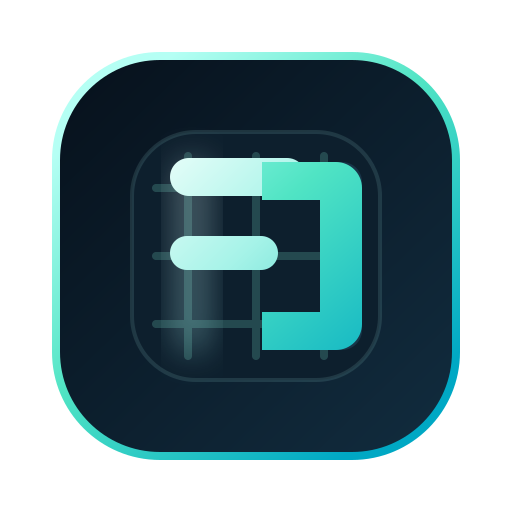

Option D
My safest pick
Lattice Gate
A structured, grid-aware mark that feels like policy, controls, and systems architecture. It reads as disciplined software rather than generic cybersecurity.

Systemic
Product-native
Distinct without being weird